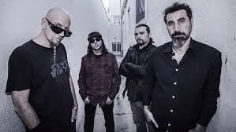
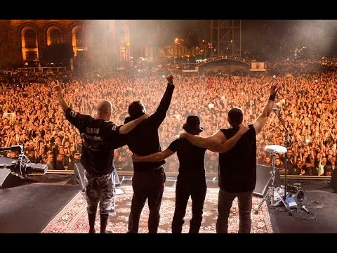

System of a Down is an Armenian-American heavy metal band formed in Glendale, California in 1994. The band currently consists of founding members Serj Tankian (lead vocals, keyboards), Daron Malakian (vocals, guitar) and Shavo Odadjian (bass, backing vocals) as well as John Dolmayan (drums), who replaced original drummer Andy Khachaturian in 1997.[1] The band achieved commercial success with the release of five studio albums, three of which debuted at number one on the US Billboard 200. System of a Down has been nominated for four Grammy Awards and their song "B.Y.O.B." won a Grammy Award for Best Hard Rock Performance in 2006. The band went on hiatus in 2006 and reunited in 2010; since then, they have performed live occasionally despite having not released any new material since the Mezmerize and Hypnotize albums in 2005. System of a Down has sold over 40 million records worldwide, while two of their singles "Aerials" and "Hypnotize" reached number one on Billboard's Alternative Songs chart.
In June 1998, System of a Down released their debut album, System of a Down. They enjoyed moderate success as their first singles "Sugar" and "Spiders" became radio favorites and the music videos for both songs  were frequently aired on MTV. After the release of the album, the band toured extensively, opening for Slayer and Metallica before making their way to the second stage of Ozzfest. Following Ozzfest, they toured with Fear Factory and Incubus before headlining the Sno-Core Tour with Puya, Mr. Bungle, The Cat and Incubus providing support. In November 1998, System of a Down appeared on South Park's Chef Aid album, providing the music for the song "Will They Die 4 You?" Near the end of the song Tankian can be heard saying, "Why must we kill our own kind?", a line that would later be used in the song "Boom!" Although System of a Down is credited on the album, South Park character Chef does not introduce them as he does every other artist featured on the record.[7] System of a Down's former drummer, Ontronik Khachaturian, briefly reunited with the band at a show at The Troubadour in 1999, filling in on vocals for an ill Tankian.[3] In 2000, the band contributed their cover of the Black Sabbath song "Snowblind" to the Black Sabbath tribute album Nativity in Black 2.[8]
On September 3, 2001, System of a Down had planned on launching their second album at a free concert in Hollywood as a "thank you" to fans. The concert, which was to be held in a parking lot, was set up to accommodate 3,500 people; however, an estimated 7,000 to 10,000 fans showed up. Because of the large excess number of fans, the performance was cancelled by police officers just before the group took the stage. No announcement was made that the concert had been cancelled. Fans waited for more than an hour for the group to appear, but when a banner hanging at the back of the stage that read "System of a Down" was removed by security, the audience rushed the stage, destroying all the band's touring gear (approximately $30,000 worth of equipment) and began to riot, throwing rocks at police, breaking windows, and knocking over portable toilets. The riot lasted six hours, during which six arrests were made. The band's manager, David "Beno" Benveniste, later said that the riot could have been avoided if the group had been permitted to perform or had they been allowed to make a statement at the concert regarding the cancellation. System of a Down's scheduled in-store performance the next day was cancelled to prevent a similar riot.[9][10] The group's big break arrived when their second album, Toxicity, debuted at No. 1 on the American and Canadian charts, despite the events of 9/11. The album has eventually achieved 3x multi-platinum certification in the United States[11] It was still on top in America during the week of the 9/11 attacks and the political environment caused by the attacks added to the controversy surrounding the album's hit single "Chop Suey!" The song was taken off the radio as it contained politically sensitive lyrics according to the 2001 Clear Channel memorandum at the time such as "(I don't think you) trust in my self-righteous suicide." Regardless, the video gained constant play on MTV as did the album's second single, "Toxicity". Even with the controversy surrounding "Chop Suey!" (which earned a Grammy nomination), System of a Down still received constant airplay in the United States throughout late 2001 and 2002 with "Toxicity" and "Aerials". In May 2006, VH1 listed "Toxicity" in the number 14 slot in the 40 Greatest Metal Songs. In 2001, the band went on tour with Slipknot throughout the United States and Mexico. Following a performance in Grand Rapids, Michigan, Odadjian was allegedly harassed, ethnically intimidated, and was physically assaulted by security guards backstage, who then dragged him out of the venue. Odadjian received medical attention from police and later filed a suit against the security company.[12] Despite the incident, the tour was a success and System of a Down and Slipknot went on the Pledge of Allegiance Tour together with Rammstein in 2001. In late 2001, unreleased tracks from the Toxicity sessions made their way onto the internet.[13] This collection of tracks was dubbed Toxicity II by fans. The group released a statement that the tracks were unfinished material and subsequently released the final versions of the songs as their third album, Steal This Album!, which was released in November 2002. Steal This Album! resembled a burnable CD that was marked with a felt-tip marker. About 50,000 special copies of the album with different CD designs were also released, each designed by a different member of the band. The name of the album is a reference to Abbie Hoffman's counter-culture book, Steal This Book as well as a message to those who leaked the songs onto the  internet. The song "Innervision" was released as a promo single and received constant airplay on alternative radio. A video for "Boom!" was filmed with director Michael Moore as a protest against the War in Iraq.
On November 29, 2010, following several weeks of Internet rumors, System of a Down officially announced that they would be reuniting for a string of large European festival dates in June 2011.[22] Among the announced tour dates included UK's Download Festival, Switzerland's Greenfield Festival, Germany's Rock am Ring/Rock im Park, Sweden's Metaltown, Austria's Nova Rock Festival and Finland's Provinssirock. The reunion tour commenced on May 10, 2011 in Edmonton, Alberta.[23] System's first tour through Mexico and South America began on September 28, 2011 in Mexico City, ending in Santiago (Chile) on October 7, 2011.[24] From late February to early March 2012, they headlined five dates at Soundwave festival.[25] This was the band's first visit to Australia since 2005. The band have continued playing around the world. On August 11 and 12, 2012, they played the Heavy MTL and Heavy T.O. music festivals in Montreal and Toronto respectively.[26] In August 2013 System of a Down played at the UK's Reading and Leeds Festivals, among other festivals and venues that year.[27] System of a Down played their only 2013 US performance at the Hollywood Bowl on July 29; tickets sold out hours after going on sale on March 22. On November 23, 2014, System of a Down announced the Wake Up The Souls Tour to commemorate the 100th anniversary of the Armenian Genocide. The tour included a free concert in Republic Square in Yerevan, Armenia on April 23, 2015, their first show in the country.[28]